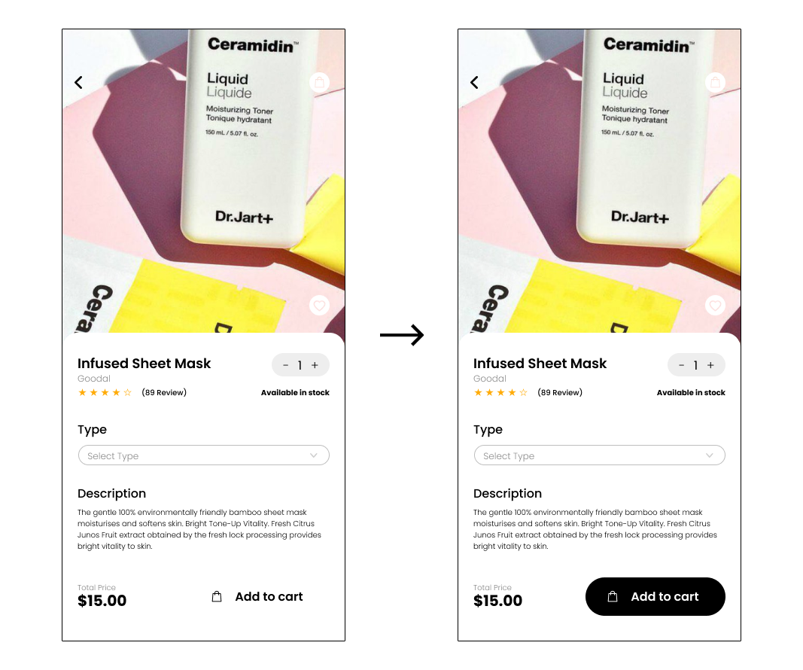

Dewy is an Australian online store that offers a diverse selection of high-quality Korean skincare products at affordable prices, which are difficult to obtain in Australia and Oceania.
Identifying User Typology
Skincare can be overwhelming, time-consuming, and confusing for beginners and those with busy lifestyles. Reports of hazardous ingredients in some products also add to the concern. Dewy aims to simplify this process by providing a diverse selection of safe and high-quality Korean skincare products.
Identifying Business Market
Dewy offers a subscription service that delivers customized boxes of 7 sheet masks each month, based on a quiz that helps determine the customer's skin type. This eliminates the need for customers to research and purchase products individually.

Direct Competitive Analysis
Facetory
Facetory began their business providing subscription services of their 'mystery boxes' with Korean skincare products. The brand has grown to manufacturing their own products and collaborating with other brands since. Now, Facetory products are on the shelves of Target in America.
SWOT analysis
S Strong market share in their niche subsection (Korean sheet masks);
W Lack of variety in products offered due to their niche concentration in sheet masks;
O International expansion;
T Low barrier of entry.
Key Features
✓ Subscription boxes
✓ Skin type quiz
✓ Sheet mask collections
Indirect Competitive Analysis
Innisfree Australia
Innisfree is a Korean cosmetic brand popular for its affordability and for its' aseptic ingredients and image. The brand being launched by the largest skincare and cosmetic company of Korea, the brand offers variety of skincare products, such as sheet masks and face cream.
SWOT Analysis
S Globally recognised brand;
W Relatively short history compared to other global competitors;
O Expansion via the trends of K-beauty in social media in younger generations;
T Rapid growth/development of similar brands.
Key Features
✓ Global physical retail stores
✓ Member-only offers
✓ Brand collaborations
✓ Online exclusive sets
Dewy's business market position
Dewy adopted a business model similar to Facetory's subscription-based service, which automates the process of delivering sheet masks to customers when they run out. To eliminate the effort for customers to order, Dewy targets customers in Australia and New Zealand through social media marketing on platforms like TikTok and Instagram. While some Korean beauty brands have already entered the Australian market, Dewy believes there is still an opportunity to establish a presence in the region.
Millers's Law

Display information in chunks, this way it is manageable to users to remember what they consumed.
Von Restorff Effect

Highlight elements like Call to Action (CTA) to stand out from the rest of the design, it's easily noticeable by user.
Jakob's Law

For instance think how Amazon, myntra and most of the ecommerce sites behave. They follow similar patterns, similar checkout processes most of the models are almost same. This way the user will focus on their task rather than learning new models.
Low Fidelity Wireframing

UI Design

Reflection
In reflection on the Dewy project, I learned the importance of understanding the user and their needs. Through conducting the user research, I was able to gain valuable insight into the target audience's pain points and preferences. This helped inform my design decisions and ensured that the final product was user-centered. Additionally, iterating and validating my designs through prototyping and testing allowed me to gather feedback and make improvements to the user experience.
I realised the importance of usability in creating the navigation intuitive ensuring that all aspect of the product are taken into consideration. One of the most important takeaways from this project was that focusing on the user and their needs has a direct correlation with sales rate. By understanding the target audience and designing a user-centered product, it will lead to increased satisfaction and a likelihood of them making a purchase.
Key Takeaways
• Conduct thorough user research to gain insight into the target audience's needs, wants and pain points, to inform the design decisions to ensure the final product is user-centered.
• Use prototyping and testing to validate design decisions and gather feedback.
• Continously gather feedback and use it to imporve the product even after the product has been launched.